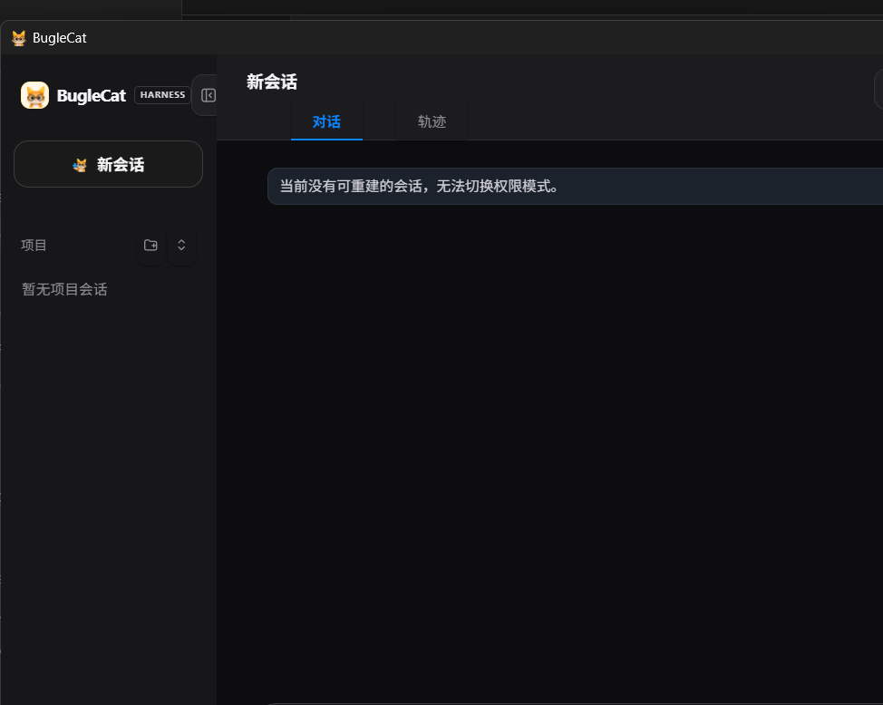

一个采用 Rust + Tauri 2 构建、支持多模型商与可插拔 Harness 的本地 coding agent。它不是官方 Codex 的复制品，而是把编码 Agent 最关键的工程机制重建成可读、可测、可替换模型后端的控制面：17 个内置工具、文件检查点、后台 PTY、沙箱审批、宿主声明核验、MCP 热重载、Skills、上下文编辑与离线回归门禁。

最新复跑：9 月 8 日下午报告，首轮 6 / 6，六份补丁独立重放全部通过，Agent 累计 609.09 秒。沿用相同模型和执行器，小样本改善不代表稳定成功率提高。下方保留早前运行记录。
2026 年 9 月 8 日，使用 deepseek-v4-pro 完成六类真实源码故障注入测试：失败分类与重试、补丁定位、预算退出码、编译门禁、文件编码、诊断脱敏。
首轮通过 5 / 6 道；每题最多一次反馈后，最终通过 6 / 6 道。
结果由独立测试验收，并从原始故障副本重放补丁复查。报告保留了首轮失败、重试、耗时与候选补丁，不只展示成功结果。
测试边界：每类仅一道题，指定目标文件并提供功能约束和可见测试。这是受控开发自测，不代表普遍成功率，也不是无提示全仓库诊断或生产可靠性认证。
想把编码 Agent 接入你的工作流，或一起研究怎样可靠地修改与验证代码？欢迎带着具体场景来聊。
合作联系：2537676793@qq.com
邮件中可以简单介绍你或团队、使用场景、希望合作的内容与时间安排。具体范围和交付方式沟通后确定。
发邮件谈合作BugleCat 是一个本地运行、可切换模型商并采用可插拔 Harness 的 coding agent，用来验证“一个模型怎样在受控环境里持续读代码、改文件、跑命令、看结果、再修正”。
它对齐的是 Codex / Claude Code 类工具的工程能力，而不是外观：交互式编码循环、17 个内置工具协议、仓库读写与结构化搜索、命令执行与后台 PTY、审批/沙箱、宿主级声明核验、会话恢复与文件检查点、AGENTS.md、Skills、MCP、上下文编辑和成本统计。
后端原生支持 OpenAI 兼容 /v1/chat/completions 与 Anthropic Messages /v1/messages，既可以接 DeepSeek、Claude、OpenAI、智谱、百炼、MiniMax 等托管 API，也可以把 base_url 指到本地 Ollama、vLLM、llama-server、LM Studio 或企业内网模型服务。
模型不能直接碰文件系统。它必须输出结构化 tool call，由工具层在沙箱/审批与宿主核验边界内执行，再把真实结果喂回模型形成闭环。
不宣称复刻官方云端容器、PR 自动 review 或内核级强隔离；它聚焦本地 coding agent 的核心可运行链路与可审计控制面。
它展示的是 agent 工程化：协议、权限、工具恢复、上下文编辑、宿主物理事实核验、多厂商兼容性和零 API 离线回归门禁。
官方 Codex 的关键体验是：读仓库、解释计划、调用工具改代码、跑命令验证、在权限边界内持续迭代，并能通过 AGENTS.md、Skills、MCP、会话历史等机制长期工作。BugleCat 把这些能力拆成了本地可运行模块。
| Codex 类能力 | BugleCat 做到了什么 | 实现程度 |
|---|---|---|
| 交互式编码循环 | ncx-core::AgentLoop（及 Python AgentLoop.run_turn()）执行“模型 → 工具 → 结果 → 再模型”的多轮循环，CLI 和 Tauri GUI 共享同一 AgentRuntimeProfile 装配路径。 | 已实现 |
| 读仓库 / 改文件 / 跑命令 | read_file、apply_patch、shell、grep_files、find_files、lsp、pty_* 等 17 个内置工具统一经 ToolRegistry 派发，只读工具可并发执行。 | 已实现 |
| Harness 结构化探索与恢复 | inspect_workspace、plan_change、verify_change、summarize_blockers 配合 ToolRecoveryPolicy 对半截补丁或未知工具做有界重试。 | 已实现 |
| 沙箱、审批与宿主核验 | 三档沙箱 + 四档审批 + 权限模式（default / acceptEdits / plan / bypassPermissions），附带宿主级声明漂移物理核验（host-rules-v3.4）。 | 已实现，Windows 为策略级边界 + 路径重解析点拦截 |
| 会话恢复、历史与检查点 | 全量对话写入 JSONL；按会话保存快照，支持 --resume、GUI 会话回放，以及每轮自动/手动文件检查点（/checkpoints、/restore）。 | 已实现 |
| AGENTS.md 项目指令与确定性 Hooks | ncx-core::agents_md 分层读取项目指令注入 system prompt；hooks.json 支持 PreToolUse / PostToolUse / Stop 确定性钩子。 | 已实现 |
| Skills 渐进加载与 Codex 插件兼容 | 用户 skill + 内置 code-review / debug / write-tests；支持直接挂载本地 Codex 插件的 Skills、MCP、Hooks 与 Apps 元数据。 | 已实现 |
| MCP 扩展工具与热重载 | 从 ~/.nanocodex/mcp.toml 连接服务，工具暴露为 mcp__server__tool；支持 CLI/GUI 会话内 /mcp reload 热重载与严格只读注解门禁。 | 已实现 |
| 上下文压缩与裁剪 | 支持 deterministic 零成本压缩、opt-in 模型摘要，以及按保留条数清理旧工具结果（clear_tool_uses_v1）与旧思考块（clear_thinking_v1）。 | 已实现 |
| 长期记忆 | remember 工具写入 ~/.nanocodex/memory.md；可选挂载 local-plugins/llmwiki-memory 分层跨会话记忆插件。 | 已实现 |
| Git worktree A/B 对比 | 用两个隔离 git worktree 跑同一 prompt，对比 diff、token 成本和耗时后决定采纳哪一侧（Python ab_compare.py）。 | 已实现 |
| Tauri 2 桌面端 / 调度 / 图片输入 | rust/gui Tauri 2 + Svelte 5 桌面端、ask_user_question 弹窗、工作区变更面板、一次性/周期调度任务与多模态图片输入。 | 已实现 |
ncx-core::AgentLoop（以及 Python AgentLoop.run_turn()）驱动单个用户回合直到完成。一个回合内可能发生多轮模型调用；每轮可产生工具调用，经沙箱/审批/Hooks 与工具恢复策略处理后，工具结果再进入下一轮上下文，token 用量逐轮累计。
// rust/crates/ncx-core — 回合产物与统计快照 pub struct TurnOutcome { pub final_text: String, pub iterations: usize, // 本回合循环了几轮 pub stop_reason: StopReason, // 完成 / 预算触顶 / 用户取消 pub tools_used: Vec<String>, pub usage: TokenUsage, // 含 prompt_cache_hit / miss 拆分 }
OpenAI 兼容或 Anthropic 接口能跑起来只是第一步。真正做 coding agent 时，reasoner 思考回放、流式 tool call 分片、首包超时、HTTP 异常脱敏和 cache 计费都会踩坑。BugleCat 在 Provider 与 Harness 边界统一处理这些兼容问题。
| 优化点 | 为什么需要 | 实现位置 |
|---|---|---|
reasoning_content 回放 | DeepSeek reasoner 在 assistant 历史里有 tool_calls 但缺 reasoning 时可能拒绝后续请求；BugleCat 会为历史回合保留或补齐占位。 | ncx-provider / _sanitize_reasoning_replay() |
| reasoning 字段兼容 | 不同兼容网关可能返回 reasoning_content、reasoning 或 Anthropic thinking block；统一抽取后 CLI/GUI 可把思考流和正文流分开显示。 | ncx-provider / _extract_reasoning() |
| DeepSeek thinking 参数映射 | off 映射到 thinking: disabled，max/high 映射到 DeepSeek thinking-mode 的扩展字段，避免配置写了但请求没带。 | ncx-provider / _apply_reasoning_effort() |
| 自适应推理档 | auto 不再只是 no-op；遇到“报错/调试/debug/エラー”走 max，搜索类任务走 low，普通开发默认 high。 | ncx-core::auto_reasoning / agent/auto_reasoning.py |
| 流式首包超时与错误脱敏 | 代理网络下流式请求可能卡住；非 2xx 响应统一只暴露 HTTP <status>，不把远端 HTML/JSON 原文或凭据拼进上下文或日志。 | ncx-provider / NANOCODEX_STREAM_OPEN_TIMEOUT_S |
| 流式 tool call 聚合 | tool call 在 SSE 流里按 index 分片到达；BugleCat 聚合完整 id、name、arguments 后再交给 ToolRegistry，避免半截 JSON 直接执行。 | ncx-provider::sse / chat_stream() |
| DeepSeek cache-aware usage | 自动提取 prompt_cache_hit_tokens / prompt_cache_miss_tokens，在 CLI /usage 中展示命中拆分，并在 Python 线按命中/未命中分别折算美元成本。 | ncx-provider + pricing.py |
| 多协议托管 / 本地双模式 | 同一套工具与权限控制面既可接 OpenAI-compatible 端点，也可接原生 Anthropic Messages 端点或本地 Ollama / vLLM / LM Studio。 | protocol + base_url + model 配置 |
ncx-core 统一管理会话、上下文编辑、预算、检查点与声明核验，CLI 与 Tauri GUI 共享同一套 AgentRuntimeProfile 与 70 个强类型协议方法。ncx-core::verification 确定性声明核验器（host-rules-v3.4），可物理拦截“未运行测试却宣称通过”的幻觉声明。nanocodex-rs 交互式 REPL、斜杠命令、调度器与 Golden 评测入口。ab_compare.py worktree 对比与美元成本折算）。# 方式一：直接下载 GitHub Release v0.1.2 预编译包 # https://github.com/dgy-github/BugleCat/releases/tag/v0.1.2 # 解压 buglecat-20261014-final.zip 或安装 BugleCat_0.1.0_x64-setup.exe # 配置文件示例：~/.nanocodex/config.toml api_key = "sk-..." base_url = "https://api.deepseek.com/v1" model = "deepseek-chat" reasoning_effort = "auto" # 方式二：源码构建与运行 Rust CLI / Tauri 桌面端 cargo run --manifest-path rust\Cargo.toml -p ncx-cli -- --cd . cargo run --manifest-path rust\Cargo.toml -p ncx-cli -- "summarize this repository" npm.cmd --prefix rust\gui run tauri dev # 全套离线回归测试（无需真实 API Key / 外网） python scripts/check_rustfmt.py cargo test --manifest-path rust\Cargo.toml --workspace --all-features cargo test --manifest-path rust\gui\src-tauri\Cargo.toml --lib python -m pytest -q
~/.nanocodex/config.toml）。Windows 沙箱是策略级而非内核隔离；MCP 工具在沙箱外执行子进程，只启用你信任的服务。